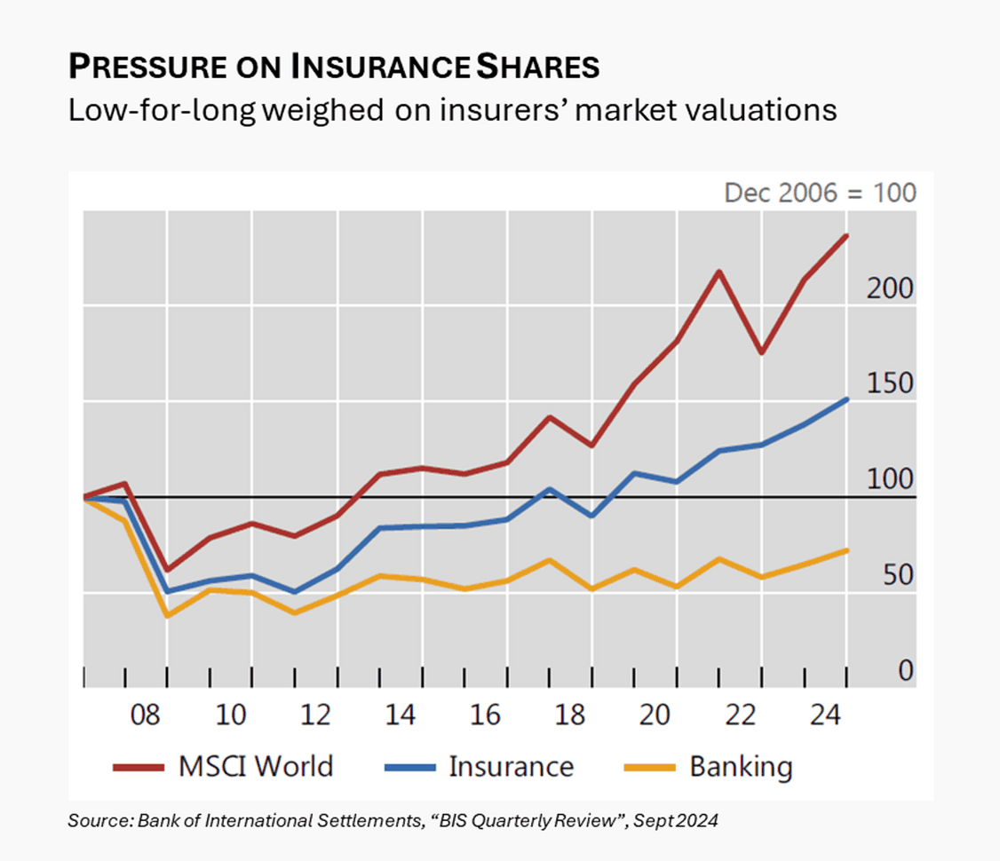
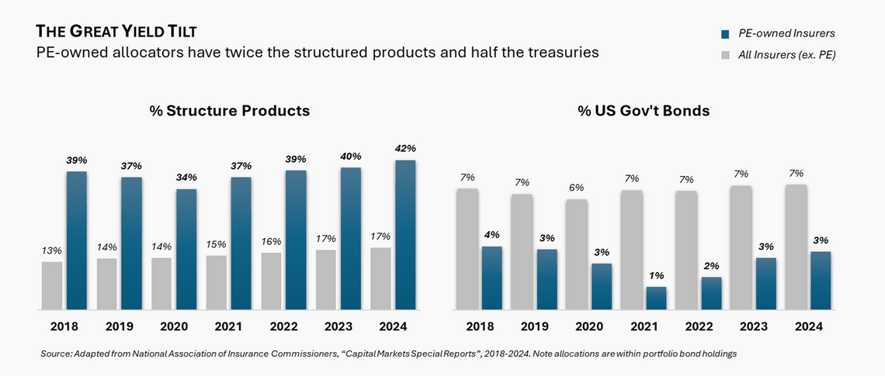
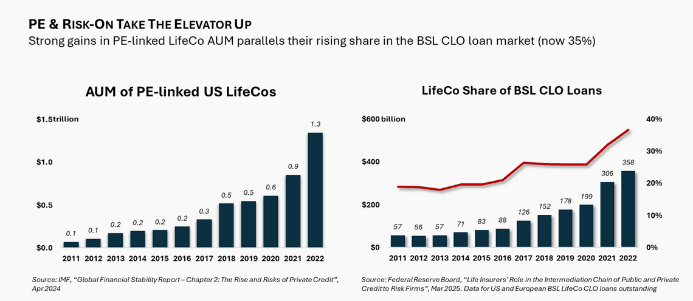
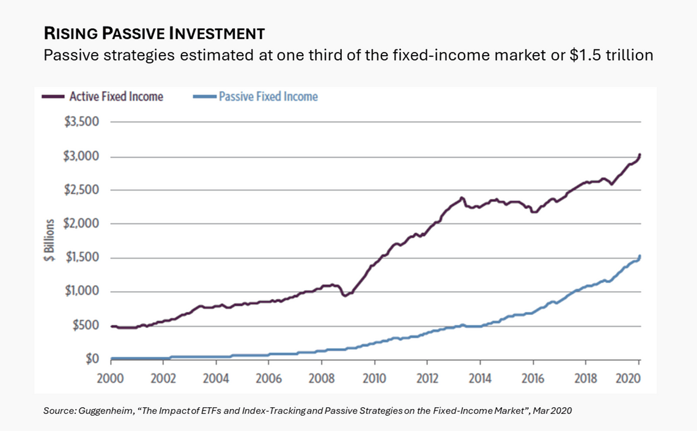
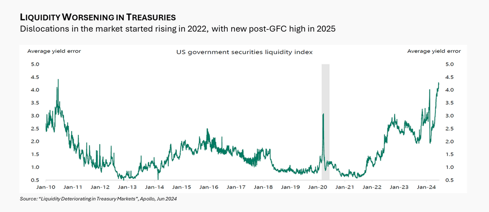
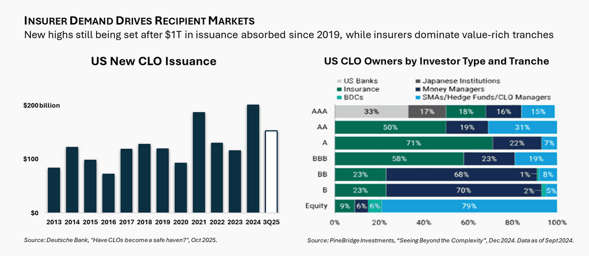

Where the Capital Went: Allocation Tilt, New Drivers, and Shifting Liquidity

Think of this as an evolving narrative about how markets are changing. Following the GFC and
the long period of low global rates, those reliant on paying future obligations (often to pensioners and policyholders) moved away from the safest markets in search of higher returns. This stretch for yield was evident across sectors in investment management, with one of the largest and most notable areas being the sleepy safe-haven of life insurance companies (LifeCos). These firms write policies to individuals based on human health and longevity, resulting in well understood long-term liabilities with decades of supporting data. However, when returns on safe long-term assets like US treasuries fell, and then remained low, concern about LifeCos meeting required returns began to rise among executives and shareholders. The performance of publicly traded LifeCos began to lag peers in capital markets, and this confluence of events attracted the attention of some of the world’s most savvy investors - private equity firms. Persistently low rates both created investable targets and provided a low cost of capital for takeovers.

Insurer and PE flywheel
The acquirers first saw giant pools of conservatively managed assets underperforming and recognized a value opportunity, and one that played to their strengths as sharp investment managers. Once inside the door they saw all sorts of ways to fix the place up. Start with tilting the conservative government bonds up the risk curve slightly to investment-grade, and then to asset-backed securities (ABS), collateralized loan obligations (CLO), and commercial / residential mortgage-backed securities (CMBS / RMBS). As US regulators looked favourably on the connection to real-world assets and diversified nature of these structured products, the result was both higher returns and more investable capital. Everyone wins.

As an added bonus, LifeCos benefit from the fact that the PE firm is also an expert in these structured credit products and private credit lending, providing a smooth channel inside the castle walls to redistribute the capital. This in turn provides a great source of both funding and fee revenue to their new PE-owners, particularly those with growing private credit arms. The flywheel from PE to insurance and back to PE should be clearer now, spinning off dramatic growth in PE-linked LifeCo assets under management, as well as PE-linked structured credit and private credit capital pools.

So what’s the issue here? Everyone seems to be winning inside the LifeCo ecosystem, and firms may even be passing through their newfound returns to policyholders as they compete for new business. Let’s start with the wider market implications of this reallocation and save the review of sliding LifeCo exposure to less liquid assets for another time. To gauge the impact of these capital shifts, we take a brief detour into the growing body of research on inelastic markets.
Inelastic Markets Hypothesis (IMH)
The IMH framework was developed by professors Xavier Gabaix of Harvard University and Ralph S. J. Koijen of The University of Chicago, and gained widespread recognition among practitioners when it won the Swiss Finance Institute Outstanding Paper Award in 2020 and the prestigious AQR Insight Award for exceptional work in investment management in 2021 [1]. Building on prior work in market microstructure theory (particularly order-flow literature), the premise of IMH is that markets have a surprisingly inelastic response to demand [2]. Said differently, capital flows into markets can create dramatically larger pricing responses than traditional market theories would expect. In practical terms their empirical result is simple to remember: every $1 invested into the stock market increased the market’s aggregate value by approximately $5 [3]. But why this happens is more complex.
IMH starts with flows, then shows how major market participants with fixed-allocation mandates amplify those flows as they rebalance. The rise of passive index investing has intensified this amplification. This rising share of passive capital with limited flexibility to adjust portfolios in response to price changes results in more significant price impacts from the same fund flows.

Consider an in-person antiques auction, where the sale prices are set by the pace and intensity of live bids in the room (flow). The total wealth in the room (stock) is less relevant in the moment than is the scale and velocity of bidders and their bids. Now let’s add one antique dealer who keeps a fixed 80/20 split between their art and furniture inventory. If he wins a furniture lot, his mix drifts off target, so he needs to bid for art to restore the 80% balance. In this case the needed top-up is large relative to the furniture spend and requires 4x more cash to buy art to rebalance, which adds extra art bid flow and lifts clearing prices across related lots. Now scale this up to a room full of such similar dealers and such small, persistent flows reprice the whole catalogue. In the real world of investment markets, the dealers are large asset managers or strategies with fixed allocation requirements (such as index funds or ETFs).
Insurer Reallocations Meet the IMH
This relates directly to the PE-controlled shift in insurance asset allocation. Apply the flow model to fixed-income and consider the inter-market relationship between “donor” and “recipient” submarkets. In this reallocation of LifeCos up the risk curve, US treasuries and low-risk fixed-income functions as the donor side - sold off to reduce low-return exposure. While the US treasuries market remains one of the deepest and most liquid in the world, concerns about liquidity started rising in 2022, at the same time the Fed raised rates in the face of growing inflation concerns. Although the confluence of factors acting in this vast market are difficult to isolate, it is clear that the PE-led reallocation away from US Treasuries was gaining steam at this time, shifting demand patterns that had been in place for decades.

Recipient markets
Structured products (CLOs, ABS, CMBS / RMBS) and private credit markets have functioned as the higher-risk recipient side of this reallocation (shown in ‘The Great Yield Tilt’ chart above), seeing surging demand across these securities as a result. New CLO issuance in the US hit an all-time high in 2024 and is on track to exceed that level in 2025 [4]. Notably, insurer ownership is concentrated in sub-AAA tranches, which have benefited from the NAIC’s model-based treatment and offer yields above comparable corporate bonds.

While perhaps not as easily visible as in equities, the rise of passive investing in fixed-income markets has likely magnified the impact of these reallocations, adding further weight to the PE-linked risk tilt.
Where This Leaves Us
Recent events, like the First Brands’ bankruptcy this month, suggest parts of the loan machine may have grown faster than underwriting discipline, a reminder that flow-driven markets can test assumptions in a hurry [5].
We now have a sense of the origin of the insurer asset shift into less traditional and higher-risk investments, we’re aware of the change of control governing these assets to sharper-elbowed PE investors, and we understand the scale of the AUM involved is now measured in the trillions of dollars. We’ve considered the inelastic market hypothesis and its potential role in channelling capital into securities like CLOs that have never experienced these levels of liquidity.
From here, the task is to map what else has changed in the financial architecture as a result. If this reallocation continues or even accelerates, new products and niche markets may scale quickly. A reversal is also plausible and would have significant market implications. Should incentives erode or the US insurance regulator narrow the regulatory arbitrage for CLOs (as planned in 2026), flows may well rotate again, and the next wave of capital could break elsewhere.
- AQR Capital Management, “AQR Announces Winners of 2021 Insight Award”, Jul 2021; The Swiss Finance Institute, “Outstanding Paper Award”, Nov 2020. ↩
- Notable preceding works here are from Professor Jean-Philippe Bouchaud from Capital Fund Management and Académie des Sciences, who also provided a critique of IMH in Jan 2022 (“The Inelastic Market Hypothesis: A Microstructural Interpretation”), confirming the empirical results and applying beyond equities to all asset classes. ↩
- Gabaix and Koijen, “In Search of The Origins of Financial Fluctuations: The Inelastic Markets Hypothesis”, National Bureau of Economic Research, Jun 2021, page 2. ↩
- Deutsche Bank, "Have CLOs become a safe haven?", Oct 2025. ↩
- “Investors warn on leveraged loan risks after First Brands collapse”, Financial Times, Oct 17, 2025 ↩